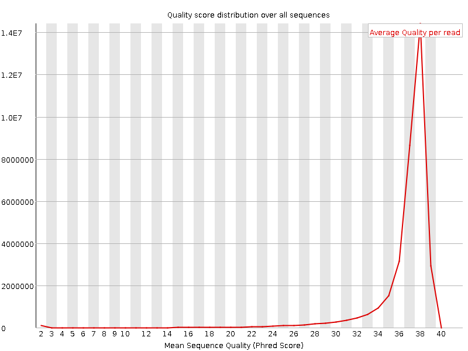

![[OK]](Icons/tick.png) Basic Statistics
Basic Statistics
| Measure | Value |
|---|---|
| Filename | 899_E5_GTGAAACG_L003_concat.fastq |
| File type | Conventional base calls |
| Encoding | Sanger / Illumina 1.9 |
| Total Sequences | 35167680 |
| Filtered Sequences | 0 |
| Sequence length | 100 |
| %GC | 42 |
Per base sequence quality
Per sequence quality scores

![[FAIL]](Icons/error.png) Per base sequence content
Per base sequence content
Per base GC content
Per sequence GC content
Per base N content

Sequence Length Distribution
Sequence Duplication Levels
![[WARN]](Icons/warning.png) Overrepresented sequences
Overrepresented sequences
| Sequence | Count | Percentage | Possible Source |
|---|---|---|---|
| AGATCGGAAGAGCACACGTCTGAACTCCAGTCACGTGAAACGATCTCGTA | 63787 | 0.18137960763974195 | TruSeq Adapter, Index 1 (97% over 35bp) |
| GATCGGAAGAGCACACGTCTGAACTCCAGTCACGTGAAACGATCTCGTAT | 51011 | 0.1450507966405518 | TruSeq Adapter, Index 1 (97% over 35bp) |
Kmer Content
| Sequence | Count | Obs/Exp Overall | Obs/Exp Max | Max Obs/Exp Position |
|---|---|---|---|---|
| CACCA | 6959910 | 2.3933637 | 5.2757726 | 1 |
| GGTGG | 4337690 | 2.3360288 | 6.097754 | 41 |
| GAAGA | 8207755 | 2.3311386 | 5.3530803 | 7 |
| CTTCT | 7697055 | 2.0784948 | 5.462578 | 1 |
| CTTCA | 7569725 | 2.0225766 | 6.555195 | 1 |
| GGAAG | 5007900 | 1.9482183 | 6.740431 | 6 |
| CAAAA | 9010465 | 1.7930558 | 5.268079 | 1 |
| CTTGA | 6363740 | 1.7717247 | 6.2353053 | 1 |
| CTCCA | 5096190 | 1.771129 | 8.710888 | 1 |
| CTTTG | 6286935 | 1.7689772 | 6.574295 | 1 |
| CTTCC | 4806475 | 1.6882268 | 5.8010187 | 1 |
| CTTGG | 4411575 | 1.6823474 | 6.794386 | 1 |
| CTTTT | 7773500 | 1.6138427 | 5.704576 | 1 |
| AAGAG | 5627935 | 1.5984269 | 5.075009 | 8 |
| GTTTG | 5417035 | 1.5881953 | 5.3161726 | 1 |
| CTCCT | 4304515 | 1.5119183 | 7.07445 | 1 |
| CTCAA | 5252760 | 1.3887142 | 5.998165 | 1 |
| CCCAA | 3958250 | 1.3611573 | 5.119371 | 1 |
| CTGGA | 3438570 | 1.297479 | 5.4646535 | 1 |
| AGAGC | 3080530 | 1.150134 | 6.1307764 | 9 |
| CTCCC | 2297765 | 1.0497586 | 6.1373134 | 1 |
| CTCAG | 2843565 | 1.029738 | 5.010078 | 1 |
| CTCGT | 2649020 | 0.96950114 | 5.4752445 | 1 |
| CGGAA | 2539520 | 0.94814473 | 5.7654505 | 5 |
| GATCG | 2507250 | 0.9460631 | 5.776225 | 2 |
| CTCGA | 2595385 | 0.9398647 | 5.3352995 | 1 |
| TCGGA | 2455815 | 0.9266551 | 5.7300477 | 4 |
| ATCGG | 2446190 | 0.9230233 | 5.634944 | 3 |
| CTCGG | 1855735 | 0.9204871 | 6.059182 | 1 |
| CGCCG | 1349840 | 0.8708909 | 5.340308 | 47 |